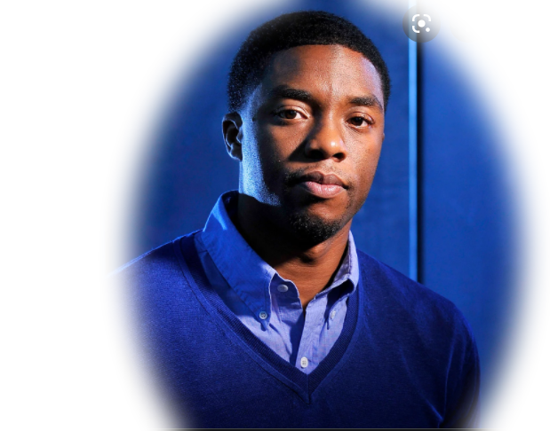

Tribute by
Chadwick Boseman was an American actor. He is known for his portrayal of T'Challa / Black Panther in the Marvel Cinematic Universe from 2016 to 2019, particularly in Black Panther (2018), and for his starring roles as several pioneering Americans, Jackie Robinson in 42 (2013), James Brown in Get on Up (2014), and Thurgood Marshall in Marshall (2017). He also had choice parts in The Express (2008), Draft Day (2014), and Message from the King (2016). Born in Anderson, South Carolina, he attended Howard University and studied at the Oxford Mid-Summer Program for acting, before moving to Los Angeles in 2008 to pursue his craft on the big screen. He died in 2020, after a four year bout with colon cancer, during which time he had starred in several of the biggest movies ever made.
Tribute by
Chadwick Aaron Boseman was born on 29 november 1976 and raised in Anderson, South Carolina, the son of Carolyn (née Mattress) and Leroy Boseman, both African-American. His mother was a nurse, and his father worked at a textile factory and managed an upholstery business. In his youth, Boseman practiced martial arts, and continued this training as an adult. As a child, he wanted to become an architect.
Boseman was diagnosed with stage III colon cancer in 2016, which eventually progressed to stage IV before 2020. He never spoke publicly about his cancer diagnosis, and according to The Hollywood Reporter, "Only a handful of non-family members knew that Boseman was sick... with varying degrees of knowledge about the severity of [his] condition." During treatment, involving multiple surgeries and chemotherapy, he continued to work and completed production for several films, including Marshall, Da 5 Bloods, Ma Rainey, and others. Boseman died at his Los Angeles home as a result of complications related to colon cancer on August 28, 2020, with his wife and family by his side.
